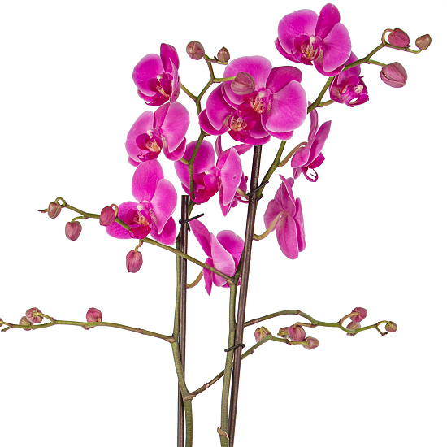
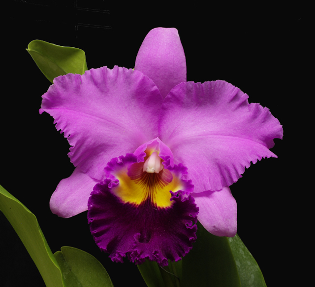
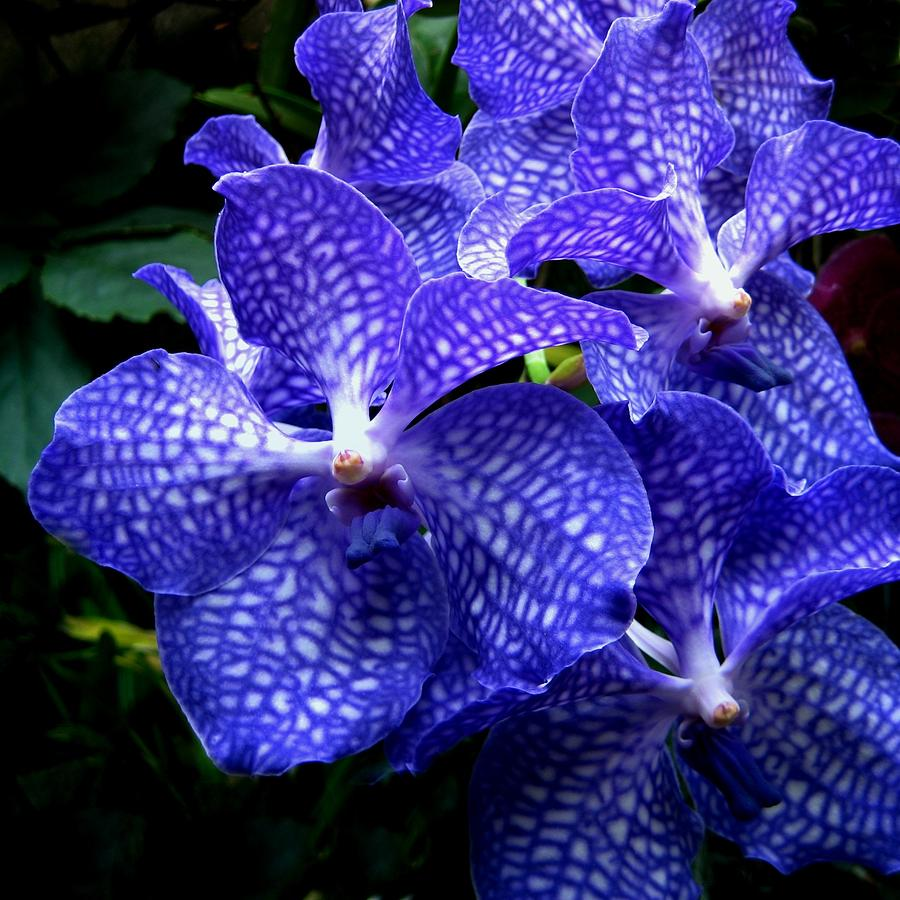
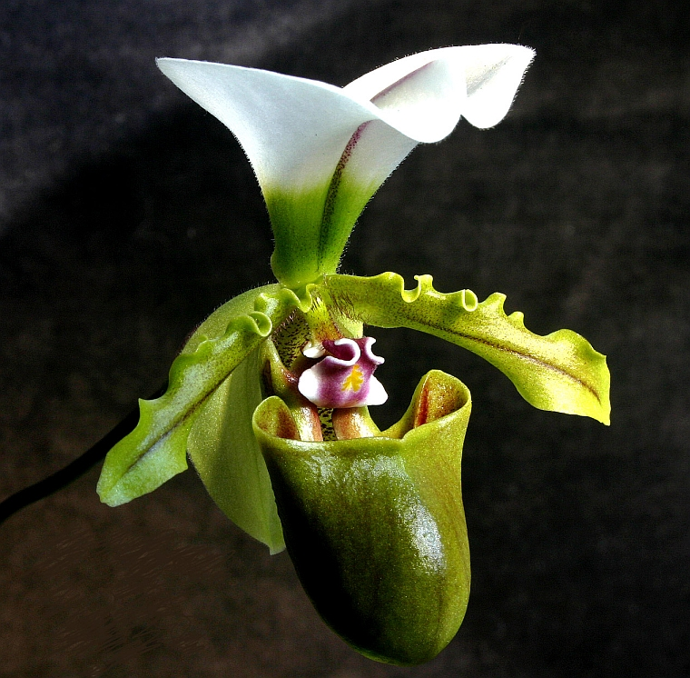
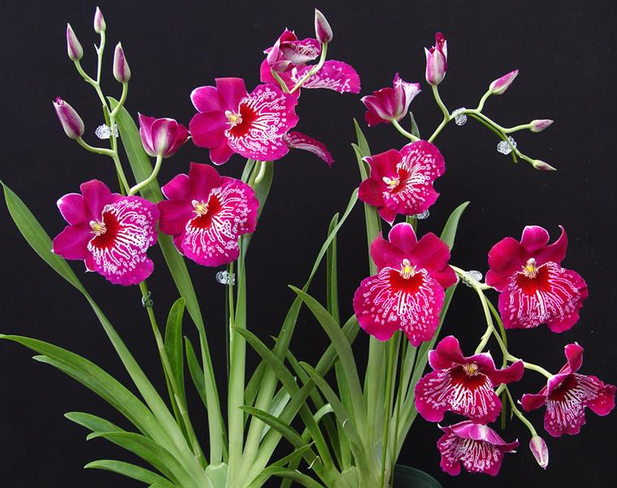

5 Most Popular Orchid Varieties – Which One do You Have?
JULY 26, 2015
Orchids are no doubt everyone’s favourite plant. Whether you have it placed outside in the garden or brightening up a room in the house, there’s no denying we love this beautiful easy-care plants but just which variety do we own?
With literally thousands of orchid types around to purchase, discovering the type you have may sound difficult but we’ve compiled a list of the five more popular varieties and even included some care tips on how to look after them so you can get the most from your favourite flowers.
1. Phalaenopsis orchid

Also known as “moth orchids” the Phalaenopsis is exceptionally popular, especially among beginners who are eager to get their green fingers out. Because orchids are known for being hard to grow, many choose the Phalaenopsis orchid because it’s one of the easiest to look after.
With their delicate wing-shaped leaves they are a stunning plant that is sure to look good in any room in your home.
One of the key benefits to this gorgeous bloom is the fact that it doesn’t like direct sunlight so it’s best to place it in your window to give it the right amount of sun and shade and create a beautiful focal point for the room.
Overview_Large550_107493
Add this to the fact the Phalaenopsis orchid doesn’t need high temperatures or high humidity and its hardly surprising that they top our popularity list.
You’ll also be pleased to know that unlike many other orchid varieties which demand constant attention, these orchids only need watering once a week. Simple!
2. Cattleya orchid

The Cattleya orchid is one of the most popular choices in the UK as they just love a touch of natural light and provide some of the most stunning colours around. This makes them popular in any room but with their big beauty comes some big responsibility for growing them.
If you wish to grow your Cattleya orchid inside then it is recommended you place them in a conservatory or a green house – if you have it – as they need a heat and humidity in order to flourish.
They love between 60-70% humidity surrounding them during the daylight hours and therefore it’s highly recommended to only purchase these blooms if you have an area where this is possible.
image: rforchids.com
image: rforchids.com
Another tricky part to get right is the light requirements of the Cattleya as they require more light than some other varieties but can be damaged or even killed by too much light exposure.
It is therefore recommended that you place the orchid in direct sunlight during the early morning and late afternoon. Try not to expose them to direct sunlight between 12-1pm as this will cause them to burn, meaning their petals will wilt.
3. Vanda orchids

Needing little care and the ultimate outdoor plants, the Vanda orchid can normally be found in a hanging basket outside many English homes.
The most important tip you should remember when it comes to Vanda orchids is that overwatering will kill them, so go easy on the juice!
image: orchidsplus.com
image: orchidsplus.com
When placing them in a hanging basket, ensure that there are rocks or pebbles about a third of the way from the bottom to ensure plenty of air ventilation which is essential to ensuring your orchid lives a happy, healthy life.
Unlike many other orchids, the Vanda needs feeding from time to time too. You can do this by fertilizing them. There are tonnes of plant foods out there however the most preferred are the nutrient solution, commercial concentrates and manure water.
4. Paphiopedilum orchid

The Paphiopedilum orchid really is one of a kind with the fact it only provides one vibrant bloom that’s sure to stand out no matter where you place it.
Known to be one of the easiest orchids to grow, the Paphiopedilum requires a great deal of sunlight throughout the day but shouldn’t be placed in direct sunlight as this may cause them to burn.
Instead, place them in the window and ensure that they are exposed to warm temperatures and high humidity such as those provided by a conservatory.
image: orchidconservationcoalition.org
image: orchidconservationcoalition.org
In order for this orchid to grow to the best of its ability, you should ensure that when you water it the roots are constantly moist too.
5. Miltonia orchid

The Miltonia orchid is favored by homeowners who require a stunning bloom and a gorgeous aroma so it’s no wonder it is among the five most popular orchids!
In order to ensure this orchid remains beautiful, it’s important that you keep it out of direct sunlight as believe it or not, these orchids absolutely thrive in low light. You can work out for yourself if your orchid is in the perfect location by touching its leaves; if they’re cool then your orchid is most definitely happy.
image: orchidweb.com
image: orchidweb.com
Water is really important to the Miltonia orchid and must be provided on a regular basis. No matter what the season, it needs watering on a regular basis – 1-2 times per week on average.
It’s also recommended that you feed the Miltonia with fertilizers as this will ensure that they continue to bloom and brighten up your home.
om, you’re bound to make someone’s day very special with a beautiful white orchid, yellow orchid or light pink orchid.